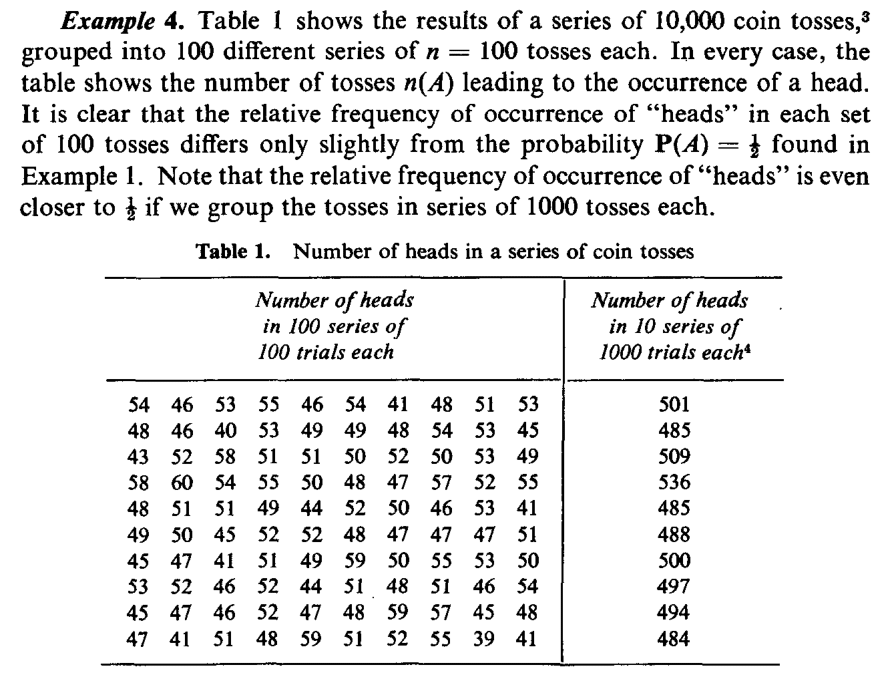

Chapter 2 🔧 Elements of Set Theory for Probability
Figure 2.1: The beaverduck from Tenso Graphics
In order to formalise the theory of probability, our first step consists in formulating events with uncertain outcomes as mathematical objects. To do this, we take advantage of Set Theory.
In this chapter, we will overview some elements of Set Theory, and link them with uncertain outcomes.
2.1 Definitions
Let us start our journey with some definitions:
We perform Random Experiments almost every day in our everyday life. Some are very deliberate, such as the referee flipping a coin to decide who gets to kick the ball first in a football game. However, some are less deliberate, such as the rise or fall of the price of a Stock which, as we have illustrated in the introductory lecture, falls within this definition.
For instance, in some card games, you have to draw more than one card, and in some dice games, (such as the Bolivian game of “Cacho Alalay”), you have to throw more 5 dice. The result of your throw is therefore the composition of elementary events (the result of each die).
With a game of cards, we can also illustrate Composite Events, e.g. drawing 4 Aces
Figure 2.2: Someone is lucky!
2.2 Some definitions from set theory
The following definitions from set theory will be useful to deal with events.
2.3 The Venn diagram
The Venn diagram is an elementary schematic representation of sets and helps displaying their properties. As you might remember from your elementary mathematics classes, a Venn diagram represents a set with a closed figure and it is assumed that the set elements are in the surface contained by the figure. They are very useful to illustrate inclusion and equality as well as more abstract notions.
Figure 2.3: Inclusion and Equality of sets with Venn Diagrams
2.3.1 Sample Space and Events
By definition, an event or several events, constitute a subset of the sample space. This can be represented in a Venn Diagram with a figure enclosed within the Sample Space.
Figure 2.4: Venn Diagram - An event within the Sample Space
2.3.2 Exclusive and Non-Exclusive Events
Two events are mutually exclusive is they cannot occur jointly. This is represented by two separate enclosed surfaces within the sample space.
Figure 2.5: Venn Diagram - Two mutually exclusive events
For illustration, consider our simple card game example. The event “drawing a King” and “drawing a Queen” are mutually exclusive, as they can’t happen at the same time.
Chart is coming
Events that are not mutually exclusive have a shared area, which in set theory constitutes an intersection and gets shown in a Venn diagram by two figures that share some of their areas.
Figure 2.6: Venn Diagram - Two Non-mutually exclusive events
Coming back to our example with the card game, consider the events “drawing a King” and “drawing a Heart.” Here there is intersection, as one can obtain a King of Hearts.
Chart is coming
2.3.3 Union and Intersection of Events
The union of the events \(A\) and \(B\) is the event which occurs when either \(A\) or \(B\) occurs: \(A \cup B\). In a Venn diagram, we can illustrate this by shading the area enclosed by both sets.

Figure 2.7: Venn Diagram - \(A\cup B\)
The intersection of the events \(A\) and \(B\) is the event which occurs when both \(A\) and \(B\) occur: \(A \cap B\). In a Venn diagram, we can illustrate this by shading the area shared by both sets.

Figure 2.8: Venn Diagram - \(A\cap B\)
2.3.4 Complement
The complement of an event \(A\) is the event that occurs when \(A\) does not occur: \(A^{c}\) (or \(\overline{A}\)). A Venn diagram illustrates this by shading the area outside the set that defines the event \(A\).

Figure 2.9: Venn Diagram - \(A^{c}\)
Let \(S\) be the complete set of all possible events, i.e. the Sample Space. In such case, \(A^c\) can be written as: \[A^c = S \setminus A = S-A.\] and is such that \[A \cup A^c = S.\]
2.3.5 Some Properties of union and intersection
Let \(A\), \(B\), and \(D\) be sets. The following laws hold:
Commutative laws: Union and Intersection of sets are commutative, i.e. they produce the same outcome irrespective of the order in which the sets are written. \[\begin{eqnarray*} A \cup B = B \cup A \\ A \cap B = B \cap A \end{eqnarray*}\]
Associative laws: Union and Intersection of more than two sets operate irrespective of the order. \[\begin{eqnarray*} A \cup (B \cup C) = (A \cup C) \cup C \\ A \cap (B \cap C) = (A \cap C) \cap C \end{eqnarray*}\]
Distributive laws
- The intersection is distributive with respect to the union, i.e. the intersection between a set (\(A\)) and the union of two other sets (\(B\) and \(D\)) is the union of the intersections.
\[ A \cap (B \cup C) = (A \cap B) \cup (A\cap C)\]

- The union is distributive with respect to the intersection, i.e. the union between a set (\(A\)) and an intersection of two others is the intersection of the unions.
\[A \cup (B \cap C) = (A\cup C) \cap (A \cup C)\]

- The intersection is distributive with respect to the union, i.e. the intersection between a set (\(A\)) and the union of two other sets (\(B\) and \(D\)) is the union of the intersections.
\[ A \cap (B \cup C) = (A \cap B) \cup (A\cap C)\]
2.4 Countable and Uncountable sets
Events can be represented by means of sets and sets can be either countable or uncountable.
In mathematics, a Countable Set is a set with the same cardinality (number of elements) as some subset of the set of natural numbers \(\mathbb{N}= \{0, 1, 2, 3, \dots \}\).
A countable set can be countably finite or countably infinite. Whether finite or infinite, the elements of a countable set can always be counted one at a time and, although the counting may never finish, every element of the set is associated with a natural number. Roughly speaking one can count the elements of the set using \(1,2,3,..\)
The identities in the proposition insert tag are helpful to define some other relations between sets/events.
2.5 De Morgan’s Laws:
Operations of union and intersection of sets have interesting interactions with complementarity. These properties are formulated under the name of De Morgan’s laws. We will formulate them for two sets \(A\) and \(B\) be two sets in \(S\), but you should keep in mind that they can be generalized for an infinite amount of sets.
2.5.1 First Law
Let \(A\) and \(B\) be two sets in \(S\), then \[\begin{eqnarray} (A\cap B)^{c} =A^c \cup B^c, \end{eqnarray}\]
where:
- Left hand side: \((A\cap B)^{c}\) represents the set of all elements that are not both \(A\) and \(B\);
- Right hand side: \(A^c \cup B^c\) represents all elements that are not \(A\) (namely they are \(A^c\)) and not \(B\) either (namely they are \(B^c\)) \(\Rightarrow\) set of all elements that are not both \(A\) and \(B\).
Put in words, the firs law says that
the complement of the intersection between two sets is the union of their complements.
It is easy to see this graphically using Venn Diagrams
insert graph
2.5.2 Second Law
Let \(A\) and \(B\) be two sets in \(S\). Then:
\[\begin{eqnarray} (A\cup B)^{c} =A^c \cap B^c, \end{eqnarray}\]
where:
- Left hand side: \((A\cup B)^{c}\) represents the set of all elements that are neither \(A\) nor \(B\);
- Right hand side: \(\color{blue}{A^c \cap B^c}\) represents the intersection of all elements that are not \(A\) (namely they are \(A^c\)) and not \(B\) either (namely they are \(B^c\)) \(\Rightarrow\) set of all elements that are neither \(A\) nor \(B\).
Put in words, this law says that
the complement of the union between two sets is the intersection of their complements.
Once again, it is easy to see this graphically
insert chart.
2.6 De Morgan’s Theorem
We can extend these laws to three sets. Let us consider three sets \(A_{1}\), \(A_{2}\) and \(A_{3}\) in \(S\).
First law: \[\overline{\left(A_{1}\cup A_{2}\cup A_{3}\right)} = \overline{A_{1}} \cap \overline{A_{2}} \cap \overline{A_{3}}\]
Second Law: \[\overline{\left(A_{1}\cap A_{2}\cap A_{3}\right)} = \overline{A_{1}} \cup \overline{A_{2}} \cup \overline{A_{3}}\]
More generally, this can be extended to the union of an infinite amount of sets in a theorem that we present without demonstration. Consider the following notation for the union of an infinity of sets :
\[\bigcup_{i \in \mathbb{N}} A_{i} = A_{1} \cup A_{2} \cup A_{3} \cup \dots \]
and the intersection of an infinite but countable amount of sets
\[\bigcap_{i \in \mathbb{N}} A_{i} = A_{1} \cap A_{2} \cap A_{3} \cap \dots\]
2.7 Back to the events
When assessing any experiment with an uncertain outcome the, primary interest is not necessarily in the events themselves, as they may or may not happen) but in the probability that an event does or does not happen.
Intuitively, the probability of an event is a value associated with the event: \[\text{event} \rightarrow \text{pr(event)}\] and it is such that:
- the probability is positive or more generally non-negative (it can be zero);
- the \(\text{pr}(S)=1\), where \(S\) is the sample space and \(\text{pr}(\varnothing)=0\);
- the probability of two (or more) mutually exclusive events is the sum of the probabilities of each event.
\[P(\{1\})=P(\{2\})=...=P(\{N\})\] or equivalently \(P(\{i\})= 1/N\), for \(i=1,2,...,N\).
Now, if we define a composite event \(A\), there exist \(N_A\) realizations having the same likelihood (namely, the have the same probability) in the event \(A\), so
\[\boxed{P(A)=\frac{N_A}{N}=\frac{\mbox{# of favorable outcomes}}{\mbox{total # of outcomes}}=\frac{\mbox{# of outcomes in $A$}}{\mbox{# of outcomes in $S$}}}\]
where the ‘\(\#\)’ stands for “number.”
Building on the intuition gained in the last example (see boxed formula), we state a first informal definition of probability. Specifically, one way of defining the probability of an event is in terms of relative frequency.

This could be transformed into a shiny app!
Clearly, \[0 \leq n(A) \leq n, \quad \text{so} \quad 0 \leq P(A) \leq 1.\] Thus, we say that the probability is a set function (it is defined on sets) and it associates to each set/event a number between zero and one.
To express the probability, we need to impose some additional conditions, that we are going to call axioms.
We here briefly state the ideas, then we will formalize them:
When we define the probability we would want the have a domain such that it includes the sample space \(S\) and \(P(S)=1\).
Moreover, for the sake of completeness, if \(A\) is an event and we can talk about the probability that \(A\) happens, then it is suitable for us that \(A^c\) is also an event, so that we can talk about the probability that \(A\) does not happen.
Similarly, if \(A_1\) and \(A_2\) are two events (so we can say something about their probability of happening), so we should be able to say something about the probability of the event \(A_1 \cup A_2\).
2.8 Some references
The interested Student can find some additional info in the books by (Rozanov 2013) and (Hogg, McKean, and Craig 2019).